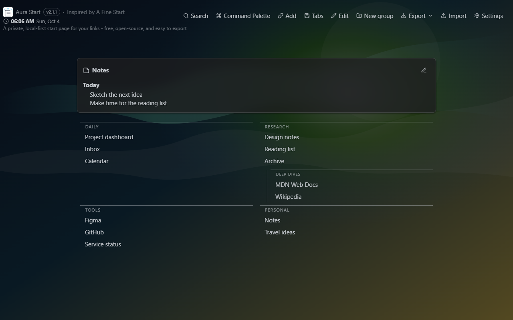

Chromium browsers
Install Aura Start from the Chrome Web Store for Google Chrome and compatible Chromium browsers.
Aura Start replaces your new tab with nested groups of links, fuzzy search, optional backgrounds and widgets, exportable backups, A Fine Start migration, and optional Google Drive sync. In Firefox, it also provides your homepage and new-window start page, with Firefox's confirmation and homepage controls.
Documentation updated October 4, 2026. Source code and installation notes are on GitHub; extension stores may offer a different version.

Use the Chromium build for Google Chrome and compatible Chromium-based browsers, or install the Firefox build from Mozilla Add-ons.
Install Aura Start from the Chrome Web Store for Google Chrome and compatible Chromium browsers.
Install the Firefox package from Mozilla Add-ons. Requires Firefox 142 or newer; Firefox controls the homepage change and keeps your session-restore preference.
Aura Start is built for people who want a calm new tab, clear data ownership, and practical recovery tools instead of account lock-in.
Organize links into readable groups and one nested level, with descriptions, tags, themes, compact mode, and configurable columns.
Find links by title, URL, description, or tags, even with small typos, and narrow results with quick filters.
Choose built-in or local background images, adjust blur and dimming, and enable clock, notes, Pomodoro, or Countdown with your own completion sound.
Review grouped safety snapshots, filter them by action type, and restore a previous local state after confirmation.
Open common actions from the visible palette button or Ctrl+K/Cmd+K when the browser assigns that shortcut.
Preview current-window tabs, skip duplicates and unsupported URLs, and save the rest into a new group after optional permission approval.
Connected devices share links, groups, settings, notes, a saved background image, and the selected Countdown sound in one Drive file. Visible pages check for changes about every five seconds.
No ads, no backend, no telemetry, no browser history permission, and no browser bookmarks permission.
Aura Start stores your links, settings, notes, media, and restore points locally by default. Full Backup ZIP keeps settings, links, notes, history, background files, and your selected original alarm sound together. JSON export keeps settings, links, notes, and history without media. Both are created locally in your browser.
Aura Start supports importing A Fine Start export codes and exporting an A Fine Start-compatible code for the basic grouped-link format. It does not claim affiliation with A Fine Start.
Aura Start has no backend and does not request browser history, bookmarks, cookies, webRequest, scripting, or full Google Drive access. Tabs access is optional and requested only when you preview current-window tabs. Storage saves your data, alarms support connected background sync, and Chromium builds use identity for Google sign-in. Custom media is prepared locally.
Sync is off until you connect. Connect the same Google account on devices running Aura Start 2.1.1.
Shared sync uses drive.file only for Aura Start's own
shared file in normal Drive and migration of older copies. Supported native Chrome
sign-in also requests drive.appdata to migrate older hidden backups. Confirmed deletion verifies
removal from accessible storage before disconnecting
and preserves local data. Hidden backups are included only when already authorized;
otherwise a persistent notice explains how to check them in the account used for cleanup.
Aura Start does not request full Drive access or access
to unrelated Drive files.
These 2.1.1 screenshots were captured from the real Aura Start interface in a browser with non-personal demo data. Google Drive remains disconnected in the screenshots; the gallery explains what was captured.
Learn how to get started, migrate from A Fine Start, export backups, use restore points, and understand Aura Start's privacy model.